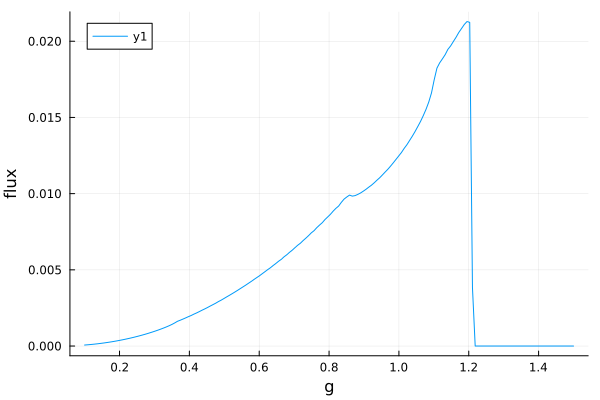
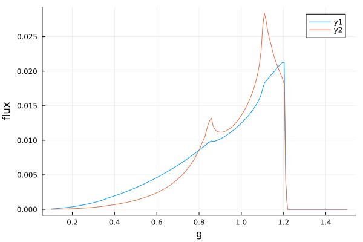
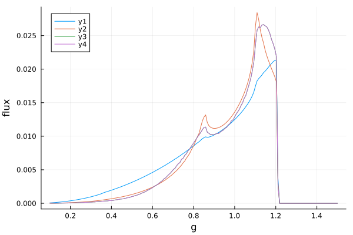
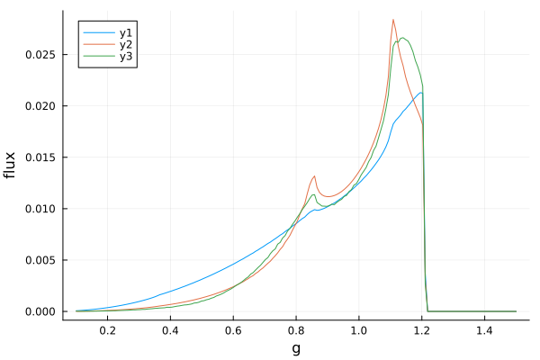
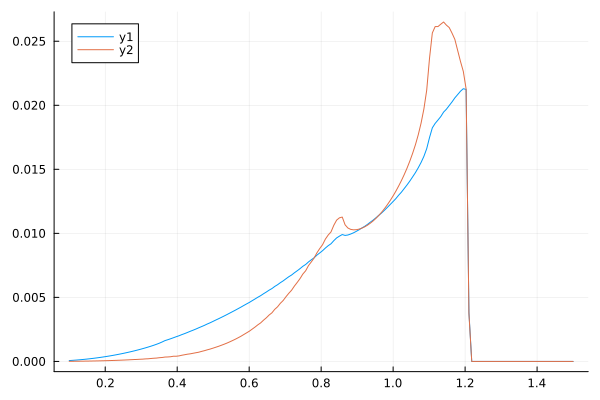

Line profiles
Line profiles are kernels that represent the blurring of spectral lines from e.g. an accretion disc around a black hole. They show how the flux is smeared over a range of energies relative to the rest energy due to relativistic effects and Doppler shifts.
Gradus.jl has various methods for calculating line profiles (see Methods). Here we will explore how to compute line profiles with Gradus using the BinningMethod and the TransferFunctionMethod.
As with any Gradus.jl simulation, we start by picking the basic components of our model:
using Gradus
m = KerrMetric(M = 1.0, a = 0.998)
# an infinite thin disc in the equatorial plane
d = ThinDisc(0.0, Inf)
x = SVector(0.0, 10_000.0, deg2rad(60), 0.0)We can compute a line profile directly using the lineprofile method:
Gradus.lineprofile — Functionlineprofile(m::AbstractMetric, x::SVector, d::AbstractAccretionGeometry; kwargs...)
lineprofile(
m::AbstractMetric,
x::SVector,
d::AbstractAccretionDisc,
profile::AbstractDiscProfile;
kwargs...
)Compute a line profile for a given set of model components. Returns both the grid and flux.
The dispatch that includes a profile can be used with an AbstractDiscProfile, conventionally calculated by a coronal model.
If no profile is specified, the emissivity is assumed to be a power-law $\varepsilon(r) = r^{-3}$.
This function accepts a number of keyword arguments depending on method used to compute the line profile. Common arguments with their defaults are:
bins = collect(range(0.1, 1.5, 180)): the (energy) bins used as the domain of the line profile.method = TransferFunctionMethod(): used to select which method to use when computing the line profile. Alternatives includeBinningMethod.
The TransferFunctionMethod dispatch additionally accepts the following keyword arguments:
minrₑ = isco(m): the innermost transfer function radius to compute / inner radius of line profile integration.maxrₑ = 50: the outermost transfer function radius to compute / outer radius of line profile integration.numrₑ = 100: the number of transfer functions to calculate.verbose = false: show a progress bar.h = 2e-8: an integration padding value to avoid numerical instabilities. See Dauser et al., 2010 for details.Nr = 1000: the number of radial steps used to interpolate between transfer function branches when integrating.
The BinningMethod dispatch additionally accepts the following keyword arguments:
λ_max = 2 * x[2]: the maximum integration time (affine parameter).redshift_pf = ConstPointFunctions.redshift(m, x): the function used to compute redshift values.verbose = false: show a progress bar.minrₑ = isco(m):` the inner radius of the line profile.maxrₑ = T(50):` the outer radius of the line profile.plane = PolarPlane(GeometricGrid(); Nr = 450, Nθ = 1300, r_max = 5maxrₑ): the image plane used in the calculation.
All other keyword arguments are passed to tracegeodesics.
There is an additional dispatch that does not accept bins as a keyword argument:
lineprofile(
bins,
ε::Function,
m::AbstractMetric,
u,
d::AbstractAccretionGeometry;
kwargs...
)This dispatch is special as it be used to pass any arbitrary function to act as the emissivity profile of the disc.
We can invoke this directly
bins, flux = lineprofile(m, x, d)If a custom (enregy) bins is desired, it can be passed using the keyword arguments. We can plot these vectors directly:
using Plots
plot(bins, flux; xlabel = "g", ylabel = "flux")
To pass a custom emissivity function, we can use a different dispatch that takes the bins and the emissivity function as the first argument. Here is a shallower power-law, reusing the same bins:
emissivity(r) = r^-2
bins, flux = lineprofile(bins, emissivity, m, x, d)
plot!(bins, flux)
To use the emissivity calcualted via an AbstractDiscProfile from a coronal model, we can do something like
model = LampPostModel(h = 10.0)
profile = emissivity_profile(m, d, model)
bins, flux = lineprofile(m, x, d, profile; bins = bins)
plot!(bins, flux)
We can at any point switch to the BinningMethod dispatches, which have largely the same functions calls. These methods take significantly longer to execute, and often give slightly lower resolution, however are much more flexible in the underlying assumptions of the model:
bins, flux = lineprofile(m, x, d, profile; bins = bins, method = BinningMethod())
plot!(bins, flux)
The defaults have been chosen to balance accuracy and speed. The above TransferFunctionMethod calculations only take a handful of seconds to compute from scratch. If all we are changing are properties of the disc, we do not necessarily need to recompute the transfer functions, and can make use of caches instead. Here is an example recipe using the transferfunctions utility:
tfs = transferfunctions(m, x, d)
f1 = integrate_lineprofile(r -> r^-3, tfs, bins)
f2 = integrate_lineprofile(profile, tfs, bins)
plot(bins, f1)
plot!(bins, f2)
Similar pre-computation can be done with the binning method, however there are currently no utility functions available in the same way as with the transfer functions.
Gradus.integrate_lineprofile — Functionintegrate_lineprofile(
prof::AbstractDiscProfile,
transfer_functions,
g_grid;
kwargs...
)
integrate_lineprofile(
emssivity::Function,
transfer_functions,
g_grid;
kwargs...
)Integrate a set of InterpolatingTransferBranches (calculated using transferfunctions) with either an AbstractDiscProfile or function representing the emissivity profile of the disc.
The emissivity function must be of the form r -> f(r)::tyepof(r), i.e. represent the emissivty as a function of only radius, returning a single value for each ring.